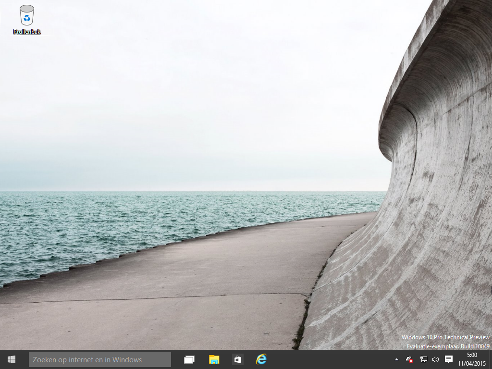

<map name="map">
<!-- #$-:Image map file created by GIMP Image Map plug-in -->
<!-- #$-:GIMP Image Map plug-in by Maurits Rijk -->
<!-- #$-:Please do not edit lines starting with "#$" -->
<!-- #$VERSION:2.3 -->
<!-- #$AUTHOR:glenn -->
<area shape="rect" coords="1,733,53,765" href="start-small.html" />
<area shape="rect" coords="427,731,464,766" href="verkenner.png" />
<area shape="rect" coords="918,729,950,766" href="meldingen.png" />
<area shape="rect" coords="895,729,917,775" href="soundbar.png" />
<area shape="rect" coords="865,729,896,765" href="desktop-network.html" />
<area shape="rect" coords="524,729,560,766" href="internet-explorer.png" />
<area shape="rect" coords="0,210,115,234" href="verkenner.png" />
<area shape="rect" coords="3,271,113,296" href="instellingen.png" />
</map>

